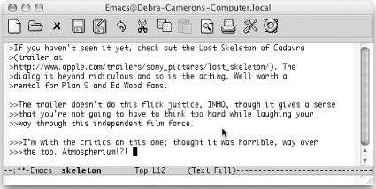
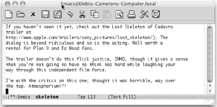

6.9. Executing Macros on a Region
A special command
lets you
execute a macro on each line in a region. How frequently do you
encounter an email with text that you want to yank, but that is
quoted several indentation levels? Of course, we can think of several
ways to delete the indentation quickly, but a line-oriented macro is
a quick approach too. You define the macro and execute it on a region
by typing C-x C-k r (for apply-macro-to-region-lines). Remember that
earlier we said that macros should set themselves up to repeat? This
command is different because it expects to work on one line at a
time. You don't want to set it up to repeat by
moving to the next line; it does that automatically.
Table 6-5 shows a quick line-oriented macro that
deletes indentation marks from text quoted in an email or
newsgroup message.
Table 6-5. Macro for deleting indentation marks|
Keystrokes
|
Action
|
|---|
|
F3
|
Start the macro definition.
| |
C-a
|
Move to the beginning of the line.
| |
M-f
|
Move forward one word.
| |
M-b
|
Move to the beginning of this word.
| |
C-Space
|
Set the mark.
| |
C-a
|
Move to the beginning of the line.
| |
C-w
|
Delete the extraneous indentation characters.
| |
F4
|
End the macro definition.
|
|
Initial state:
| |

| |
Text indented at various levels (Mac OS X).
|
|
Mark the text as a region, move to the beginning of the region, then
type: C-x C-k r
| |

| |
Indentation is deleted (Mac OS X).
|
|